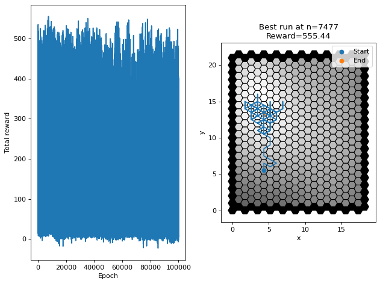

Hex Tiled Q-Learning SAR example
The challenge in this example is implementing a Q-Learning search algorithm in a hexagonal tiled environment
[1]:
# Setup
import sys, os
from loguru import logger
sys.path.insert(0, os.path.join(os.getcwd(), "../src")) # run from within examples folder
logger.remove()
logger.add(sys.stderr, level="INFO")
BUILD: str = os.environ.get("BUILD", "")
num_trials: int
steps: int
if BUILD == "doctest": # tox env specific to doctests
num_trials = 1
steps = 5
elif BUILD == "html": # tox env specific to building docs
num_trials = 30000
steps = 20
else: # normal operation
num_trials = 500000
steps = 200
[2]:
import numpy as np
import matplotlib.pyplot as plt
import matplotlib as mpl
from copy import copy
from tqdm.notebook import tqdm
import tempfile
import csv
[3]:
from jsim.Environment import HexEnvironment, HexDirections
from jsim.Agent import Agent
from jsim.Simulation import Simulation
from jsim.Environment.HexEnvironment.HexCoords import OffsetCoord
[4]:
class QHexEnv(HexEnvironment):
def __init__(self, **kwargs):
super().__init__(**kwargs)
self.pdm = self._generate_pdm()
self.n_bins = 4
self.digitized_pdm = self._encode_pdm(n=self.n_bins)
self._digitized_pdm_store = np.copy(self.digitized_pdm)
self._encode_penalty()
self._generate_states()
def _generate_pdm(self, N:int=5):
self._shape = (self._shape[0]+2, self._shape[1]+2)
x, y = np.meshgrid(np.arange(self.shape[0]), np.arange(self.shape[1]))
pdm = np.zeros(self.shape) # pad the PDM with zeros on all sides
for _ in range(N): # Generate N gaussians
A = max(np.random.rand()*2,1)
a = np.random.rand()*0.03
b = 0
c = np.random.rand()*0.03
x0 = np.random.uniform(0,self.shape[0]) # Centre of gaussian
y0 = np.random.uniform(0,self.shape[1])
pdm += A*np.exp(-(a*(x-x0)**2+2*b*(x-x0)*(y-y0)+c*(y-y0)**2))
return pdm
def _encode_penalty(self):
penalty = -1
self.pdm[0,:] = penalty
self.pdm[-1,:] = penalty
self.pdm[:,0] = penalty
self.pdm[:,-1] = penalty
self.digitized_pdm[0,:] = -1
self.digitized_pdm[-1,:] = -1
self.digitized_pdm[:,0] = -1
self.digitized_pdm[:,-1] = -1
def _encode_pdm(self, n: int) -> np.ndarray:
n_bins = n
bins = np.arange(0,np.max(self.pdm), np.max(self.pdm)/n_bins)
return np.digitize(self.pdm, bins)
def _generate_states(self) -> None:
c = np.arange(-1,1+np.max(self.digitized_pdm))
dirs = np.array([f.flatten() for f in np.meshgrid(c,c,c,c,c,c)])
pstates = np.unique(dirs,axis=1)
i = -1
self.possible_states = {(a,b,c,d,e,f): (i:=i+1) for a,b,c,d,e,f in pstates.transpose()}
# Old method, used as a warning against not using numpy for everything
# This would take about 7s to run. The above method takes about 0.2s
#
# c = np.arange(-1,1+np.max(self.digitized_pdm))
# u,v,w,x,y,z = np.meshgrid(c,c,c,c,c,c) # one for each direction (6)
# u,v,w,x,y,z = u.flatten(), v.flatten(), w.flatten(), x.flatten(), y.flatten(), z.flatten()
# self.possible_states = {(a,b,c,d,e,f): int(np.where((u==a)&(v==b)&(w==c)&(x==d)&(y==e)&(z==f))[0]) for a,b,c,d,e,f in zip(u,v,w,x,y,z)}
def _state_from_list(self, l):
assert len(l) == len(HexDirections)
return self.possible_states[tuple(l)]
def _evaluate_digi_position(self, pos: OffsetCoord) -> int:
return self.digitized_pdm[pos.row, pos.col]
def _evaluate_position(self, pos: OffsetCoord) -> float:
return self.pdm[pos.row, pos.col]
def reset(self, agent_p: OffsetCoord) -> int:
self.digitized_pdm = np.copy(self._digitized_pdm_store)
return self._evaluate_digi_position(agent_p)
def step(self, agent_s: OffsetCoord) -> tuple[int, float]:
reward = self._evaluate_position(agent_s)
neighbors = self.neighbors_coord(agent_s)
values_at_neighbors = self._state_from_list([self._evaluate_digi_position(n) for n in neighbors])
self.digitized_pdm[agent_s.row][agent_s.col] = -1
return values_at_neighbors, reward
[5]:
class QAgent(Agent):
def __init__(self, penv: QHexEnv = None) -> None:
self.state = OffsetCoord(col=0,row=0)
self.states = []
self.penv = penv
self.epsilon = 1
self.qtable = np.zeros((len(self.penv.possible_states),6))
def policy(self, pnext_s: int) -> HexDirections:
epsilon = 0.2
result = None
if np.random.uniform(0,1) < epsilon:
idx = np.random.randint(0,6)
else:
idx = np.argmax(self.qtable[pnext_s])
result = HexDirections(idx)
return result
def step(self, pnext_s: int) -> HexDirections:
return self.policy(pnext_s)
def learn(self, reward: float, state: int, next_state: int, action: HexDirections) -> None:
"""
Maximize the reward through a Q-Learning Step
:param reward: Reward based on the probability seen from the previous action by the agent
:type reward: float
:param state: The state of the digitized PDM around the agent when the previous action was deciced
:type state: int
:param next_state: The new state that the agent is in
:type next_state: int
:param action: The action by the agent
:type action: HexDirections
"""
alpha = 0.01
gamma = 0.99
reward *= -1
new_value = (1 - alpha) * self.qtable[state,action] + alpha * (reward+gamma*np.max(self.qtable[next_state]))
self.qtable[state][action] = new_value
def update(self, pa: HexDirections) -> OffsetCoord:
if not hasattr(self,'state'):
logger.error(f"Reset has not been called as {hasattr(self,'state')=}")
raise Exception
next_state = QHexEnv.neighbor_coord(self.state, pa)
self.state = next_state
return copy(self.state)
def reset(self, ps: OffsetCoord, vicinity: int) -> tuple[HexDirections, OffsetCoord]:
self.epsilon = np.max([0.01,self.epsilon*0.99])
self.state = copy(ps)
return self.policy(vicinity), self.state
[6]:
class QSim(Simulation):
agent: QAgent
env: QHexEnv
def __init__(self, initial_pos=OffsetCoord(col=5,row=5)) -> None:
self.env = QHexEnv(psim=self)
self.agent = QAgent(penv=self.env)
self.initial_agent_s = initial_pos
self.data_store = {'env_s':[],'agent_s':[],'agent_a':[],'reward':[]}
self.long_term_file_handle = tempfile.mkstemp(
suffix='.csv',
text=True
)
self.long_term_file = open(self.long_term_file_handle[1],'w')
self.long_term_file_writer = csv.writer(self.long_term_file)
self.best_run = {'total_reward':-np.inf}
super().__init__()
def __del__(self):
os.close(self.long_term_file_handle[0])
def reset(self) -> None:
self.vicinity_pdm = self.env.reset(self.initial_agent_s)
self.agent_a, self.agent_s = self.agent.reset(copy(self.initial_agent_s),self.vicinity_pdm)
self.data_store = {'env_s':[],'agent_s':[],'agent_a':[],'reward':[]}
def trials(self, num_trials: int, max_num_steps: int):
for i in tqdm(range(num_trials),):
try:
self.steps(max_num_steps)
logger.debug(f"Trial = {i}/{num_trials} | Max number of steps ({max_num_steps}) reached ")
except IndexError as e:
logger.debug(f"Trial = {i}/{num_trials} | Agent went out of bounds, resetting")
finally:
self.data_store['total_reward'] = np.sum(self.data_store['reward'])
logger.debug(f"Trial = {i}/{num_trials} | Total reward = {self.data_store['total_reward']:.2f}")
# trim the data a bit to save memory
self.data_store.pop("agent_a",None)
self.data_store.pop("env_s",None)
self.data_store.pop("reward",None)
if self.data_store['total_reward'] > self.best_run['total_reward']:
self.data_store['epoch'] = i
self.best_run = copy(self.data_store)
self.long_term_file_writer.writerow([i, self.data_store['total_reward']])
def steps(self, num_steps: int) -> None:
self.reset()
agent_s = self.agent_s
for _ in range(num_steps):
vicinity_pdm, reward = self.env.step(self.agent_s)
self.collect_data(vicinity_pdm, self.agent_a, self.agent_s, reward)
agent_a = self.agent.step(vicinity_pdm)
if agent_s and (agent_s.row > 0 or \
agent_s.col > 0 or \
agent_s.row < self.env.shape[0] or \
agent_s.col < self.env.shape[1]):
agent_s = self.agent.update(agent_a)
if agent_s.row < 0 or agent_s.col < 0:
raise IndexError(f"Out of bounds with {agent_s} < 0")
if agent_s.row > self.env.shape[0] or agent_s.col > self.env.shape[1]:
raise IndexError(f"Out of bounds with {agent_s} > {self.env.shape}")
self.agent.learn(reward, self.vicinity_pdm, vicinity_pdm, agent_a)
self.agent_s = agent_s
self.agent_a = agent_a
self.vicinity_pdm = vicinity_pdm
def collect_data(self, env_s: int, agent_a: HexDirections, agent_s: OffsetCoord, reward: float) -> None:
self.data_store['env_s'].append(copy(env_s))
self.data_store['agent_a'].append(copy(agent_a))
self.data_store['agent_s'].append(copy(agent_s))
self.data_store['reward'].append(copy(reward))
[7]:
def plot(sim: QSim):
fig, (ax1, ax2) = plt.subplots(1,2,figsize=(8, 6), dpi=80)
data = []
sim.long_term_file.close()
with open(sim.long_term_file_handle[1],'r') as f:
reader = csv.reader(f)
for row in reader:
data.append([float(f) for f in row])
data = np.array(data)
t = np.arange(0,len(data))
# Reward over time
ax1.plot(data[:,0], data[:,1])
ax1.set_ylabel('Total reward')
ax1.set_xlabel('Epoch')
# Show pdm and path
best_ds = sim.best_run
xy = [HexEnvironment.offset_to_pixel(f) for f in best_ds['agent_s']]
x = [f.x for f in xy]
y = [f.y for f in xy]
for p in sim.env.as_mpl_polygons(cmap=mpl.cm.get_cmap('gray')):
ax2.add_patch(p)
ax2.plot(x,y)
ax2.scatter(x[0],y[0],label='Start')
ax2.scatter(x[-1],y[-1],label='End')
ax2.set_ylabel('y')
ax2.set_xlabel('x')
ax2.set_title(f'Best run at n={best_ds["epoch"]}\nReward={best_ds["total_reward"]:.2f}')
ax2.legend()
ax2.set_aspect('equal')
fig.tight_layout()
logger.info(f"Number of steps: {steps}")
logger.info(f"Number of trials: {num_trials}")
plt.show()
[8]:
# Learn
sim = QSim()
sim.trials(num_trials,steps)
[9]:
plot(sim)
2022-02-02 10:01:16.390 | INFO | __main__:plot:38 - Number of steps: 200
2022-02-02 10:01:16.391 | INFO | __main__:plot:39 - Number of trials: 100000
